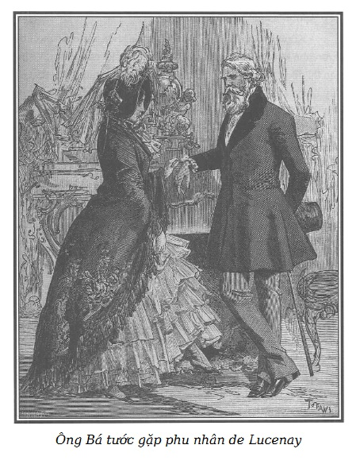

Boyer vừa rời Edwards được hai tiếng đồng hồ về đến nhà Tử tước de Saint-Remy, thì thân phụ ông này đã đến gõ cửa ở cổng vòm ngôi biệt thự phố Chaillot.
Đã cao tuổi, nhưng Bá tước de Saint-Remy vóc dáng cao lớn, vẫn còn nhanh nhẹn và tráng kiện, nước da đỏ au càng làm nổi bật bộ râu, mái tóc bạc trắng, đôi lông mày rậm vẫn đen nhánh che nửa đôi mắt sâu và rõ sắc. Trang phục phần nào nhếch nhác do thói ghét đời gàn dở nhưng từ người ông toát ra một vẻ bình thản đĩnh đạc khiến người ta phải kính nể.
Cửa ngôi nhà cậu con trai mở ra, ông đi vào.
Một người gác cổng mặc chế phục đại lễ màu nâu viền ngân tuyến, tóc rắc phấn cẩn thận, chân đi bít tất lụa xuất hiện trước thềm một buồng trực sang trọng, giá đem so với cái ổ ám khói của cặp vợ chồng Pipelet thì chẳng khác gì cái cửa hàng lộng lẫy bày trang phục thời thượng với cái thúng của chị khâu thuê.
Bá tước hỏi giọng cộc lốc:
- Ông de Saint-Remy có nhà không?
Thay vì trả lời, người gác cổng ngạc nhiên, khinh khỉnh ngắm kĩ mái tóc bạc phơ, cái áo redingote đã sờn, cái mũ cũ cùng gậy ba toong trong tay người lạ mặt.
Bá tước bực bội trước cái kiểu quan sát hỗn xược của người gác cổng, xẵng giọng hỏi tiếp:
– Ông de Saint-Remy có nhà không?
– Ngài Tử tước đi vắng.
Nói rồi người đồng nghiệp với ông Pipelet kéo dây cửa, bằng một cử chỉ có ý nghĩa, mời người lạ mặt đi ra.
– Ta sẽ đợi! – Bá tước nói và đi quá vào trong, bất chấp.
– Ê này ông bạn, ông bạn này! Không vào nhà người ta như thế này được đâu. – Người gác cổng quát to, chạy theo và túm lấy cánh tay Bá tước.
Ông lão vung cái gậy như đe dọa:
– Lạ chưa kìa! Cái thằng vô lại này, mày dám đụng vào ta à?
– Tôi còn dám làm hơn nữa, nếu ông không ra ngay lập tức. Tôi đã bảo là ngài Tử tước không có nhà rồi mà! Vậy thì, đi đi.
Vừa lúc đó, nghe to tiếng, Boyer xuất hiện trên thềm nhà:
– Ồn ào cái gì thế nhỉ?
– Thưa ông Boyer, người này cứ đòi vào nhà bằng được, dù tôi đã nói là ngài Tử tước đi vắng rồi.
– Thôi đi! – Bá tước nói với Boyer đang tiến đến gần. – Ta muốn gặp con ta, nếu nó đi vắng, ta sẽ đợi.
Boyer không phải không biết là chủ mình có một ông bố cũng như bệnh ghét đời của ông cụ, nhưng khá thạo trông vẻ ngoài đoán người, ông ta không hồ nghi chút nào về hình tích của Bá tước nên kính cẩn chào:
– Nếu ngài Bá tước đi theo tôi, tôi sẵn sàng đợi lệnh.
– Thì đi! – Bá tước đi theo Boyer trước sự sững sờ của người gác cổng.
Người hầu buồng đi trước, Bá tước theo sau, lên tầng một và qua phòng làm việc của Florestan de Saint-Remy (từ nay chúng tôi gọi Tử tước bằng cái tên này để phân biệt với ông bố) mà vào một phòng khách nhỏ thông với phòng này, ngay phía trên phòng khách dành riêng cho phụ nữ ở tầng trệt.
Boyer khúm núm:
– Dạ thưa, ông Tử tước phải vắng nhà sáng nay, nếu ngài Bá tước chịu phiền lòng chờ thì chủ con cũng sắp về đấy ạ. – Nói xong ông ta đi mất.
Còn một mình, Bá tước lơ đãng nhìn quanh, bỗng nhiên ông biến sắc, căng thẳng và giận dữ. Ông vừa nhác thấy chân dung của vợ ông, mẹ Tử tước Florestan de Saint-Remy.
Khoanh tay trước ngực, ông cúi đầu như để thoát khỏi một ảo ảnh và đi đi lại lại trong phòng.
Ông lẩm bẩm:
– Lạ thật! Người đàn bà này đâu còn nữa! Ta đã giết chết người tình của bà ta mà vết thương lòng ta vẫn còn nhức nhối như thuở ấy. Lửa hận thù chưa tắt, bệnh ghét đời kinh khủng làm ta sống gần như biệt tích, mặt đối mặt với nỗi lăng nhục mãi giày vò tâm trí ta. Người tình của con đàn bà đê tiện kia chết đi, nhục ta đã rửa thật đấy, nhưng sao nỗi hận ấy vẫn ám ảnh ký ức ta? Ôi, ta biết mà, mối hận thù trong lòng ta không cách nào xóa nổi, chính vì ta cứ nghĩ đến suốt mười lăm năm ròng rã bị chúng lừa. Suốt cả thời gian ấy ta đã quý báu, trân trọng người đàn bà khốn nạn đã phụ bạc ta một cách xấu xa đê tiện… Chính vì ta đã yêu quý đứa con trai của nó, đứa con của tội lỗi cứ như con đẻ của mình. Vì lòng ghét cay ghét đắng thằng Florestan lúc này đây thừa đủ chứng tỏ ra rằng nó là kết quả của ngoại tình. Ấy vậy mà ta cũng chẳng tin chắc mười mươi được về tính chất bất hợp pháp của thằng con. Rốt cuộc, cũng có thể nó đích thị là con ruột của ta. Đối với ta, đôi lúc điều hồ nghi này thật đáng sợ. Tuy nhiên, nếu như nó thật là con ta, vậy thì việc ta chẳng đoái hoài, luôn tỏ thái độ ghẻ lạnh với nó, việc ta từ chối cho nó giáp mặt, sẽ khó có thể tha thứ. Nhưng dù sao thì lúc này nó cũng giàu có, trẻ trung, sung sướng, nó cần gì ta? Đúng vậy, nhưng tình âu yếm của nó biết đâu lại chẳng giảm nhẹ được mối hận lòng mà mẹ nó đã gây ra cho ta!
Sau một hồi suy nghĩ kéo dài, Bá tước nhún vai nói tiếp:
– Sao ta lại còn đưa ra những giả thiết vớ vẩn, cực kỳ khó xử làm gì cho thêm đau lòng? Thôi đi, phải cứng rắn lên mới được, vượt lên trên những xúc động nặng nề và ngu xuẩn lúc này, khi ta sắp lại giáp mặt đứa con mà suốt mười năm trời đằng đẵng ta đã quý chuộng, yêu chiều như vàng ngọc, như con đẻ rứt ruột, chính đứa con kẻ mà khi ngã vật ra, máu me lênh láng dưới mũi kiếm của ta, ta đã hả dạ biết bao! Vậy mà họ đã không để ta được chứng kiến cảnh kẻ ấy thở hắt ra, chết thẳng cẳng. Ôi, họ có biết đâu vết thương lòng của ta sâu đậm nhường nào! Vả lại, cứ nghĩ đến tên tuổi của ta vốn luôn được mọi người kính trọng, nể vì, thế mà đã không ít lần bị ngạo mạn, trêu chọc và nhắc đến như một anh chồng “mọc sừng”! Nghĩ đến họ tên mà ta vốn rất đỗi tự hào, lúc này lại thành tên họ đứa con của chính kẻ mà ta muốn moi tim. Ôi, không biết tại sao ta không phát điên lên được khi nhớ đến những chuyện này?
Ông bồn chồn sải bước tiếp, khoát tấm rèm cửa và bước hẳn vào trong phòng làm việc của Florestan.
Ông vừa khuất được một lúc, thì sau tấm ri đô che khuất có một cái cửa nhỏ kín đáo nhè nhẹ mở, de Lucenay phu nhân lách vào, choàng một cái khăn sam lớn bằng lụa Cachemire màu lục, đội mũ nhung đen giản dị.
Tại sao lại có sự xuất hiện bất ngờ ấy nhỉ?
Tối hôm trước, Florestan đã hẹn gặp nữ Công tước vào sáng nay. Vốn bà ta vẫn giữ chìa khóa cửa nhỏ ở ngõ hẻm, nên theo thói quen bà ta qua khu vườn nhà kính, chắc mẩm sẽ gặp Florestan ở phòng khách phụ nữ tầng trệt. Không thấy, bà ta tưởng rằng Tử tước hẳn đang bận viết lách gì trong văn phòng, đã có vài lần như thế. Một cầu thang bí mật dẫn từ phòng khách phụ nữ lên tầng trên, bà ta đã không mảy may e ngại, tin chắc là Tử tước đã ra lệnh đóng cửa phòng khách như mọi khi. Khốn thay! Buổi gặp gỡ đáng lo ngại với Badinot đã buộc ông ta vội vã ra đi, quên bẵng buổi hò hẹn với nữ Công tước.
Không thấy ai, bà ta toan vào văn phòng thì bỗng thấy ri đô cửa phòng vén lên, bà chạm mặt với phụ thân ông Tử tước.
Bà ta không ghìm được tiếng kêu “ôi” hãi hùng.
Bá tước cũng sửng sốt: “Clotilde.”
Vốn thân cận với Bá tước de Noirmont, bố đẻ bà de Lucenay, Bá tước de Saint-Remy đã biết bà ta từ thuở còn thơ, và vẫn thường gọi bà ta bằng cái tên lễ rửa tội này.
Nữ Công tước ngây người, ngạc nhiên nhìn ông già râu bạc ăn mặc nhếch nhác, trông quen quen mà chưa nhớ ra là ai.
Bá tước xót xa trách:
– Clotilde đấy à, cháu lại ở đây, tại nhà con ta.
Những lời vừa nói khiến bà ta nhớ lại rành rọt những kỷ niệm xa xưa, rốt cuộc nhớ ra đấy là ông de Saint-Remy, cha của Florestan và reo lên:
– Ông de Saint-Remy!
Tình huống đã quá rõ ràng, quá đủ ý nghĩa. Nữ Công tước vốn tính nết kỳ quặc và quyết đoán, thấy chẳng cần dối trá gì nữa để giải thích sự có mặt của mình trong nhà Florestan. Ỷ vào mối quan hệ trước đây, ngài Bá tước từng yêu bà ta như con gái, bà ta đưa tay cho ông và nói với dáng vẻ vừa dễ thương, thân mật và dạn dĩ chỉ bà ta mới có:
– Bác ơi, bác đừng quở cháu! Bác cháu ta quen thân đã từ lâu, bác còn nhớ không, cách đây hai mươi năm, bác đã từng gọi cháu là Clotilde thân yêu của bác!
– Phải, trước đây ta đã gọi thế, nhưng mà…
– Cháu biết bác sẽ nói những gì với cháu. Bác ạ, bác biết cháu có một châm ngôn xử thế, đó là: “Trước sau rồi đâu cũng vào đấy, chẳng có gì phải băn khoăn.”
– Chao ôi, Clotilde! Nói như vậy mà được hả cháu!
– Bác ơi, bác tha cho, đừng quở cháu nữa. Hãy để cho cháu bày tỏ niềm vui được gặp lại bác, có phải hơn không? Thấy bác là cháu nhớ lại bao nhiêu chuyện. Trước hết là người cha tội nghiệp của cháu, rồi đến thuở cháu mới mười lăm… Chao ôi, cái tuổi mười lăm, sao mà đẹp đẽ thế!
– Chính vì bố cháu là bạn thân của ta mà!
Bà Công tước cướp lời ông:
– Vâng, thưa bác, đúng thế! Cha cháu mến bác biết bao! Bác còn nhớ không? Cha cháu vẫn thường cười cười đặt tên bác là “người của những ruy-băng màu lục”. Bác luôn luôn bảo cha cháu: “Anh cưng con bé Clotilde quá đấy, nên dè chừng.” Thế là ông ôm lấy cháu mà bảo: “Tôi cũng quá cưng chiều cháu thật, nhưng tôi thấy mình phải tranh thủ thời gian tăng cường gấp bội hơn thế nữa kia, vì rồi đây thiên hạ sẽ sớm lôi nó đi để đến lượt họ, họ lại cưng chiều nó.” Ôi, bố tuyệt vời của con! Bố thân yêu của con, bố đâu còn nữa!
Giọt lệ rưng rưng trên đôi mắt đẹp của bà de Lucenay. Thế rồi, chìa tay cho ông de Saint-Remy, bà ta nghẹn ngào:
– Đúng thế, cháu sung sướng quá, quá sung sướng được gặp lại bác. Bác gợi lại những kỷ niệm đến là quý báu, đến là thân thương đối với cháu…
Tuy từ lâu Bá tước đã biết cái tính khí độc đáo và tự tin của bà ta nhưng ông vẫn sững sờ trước thái độ thoải mái thản nhiên như thường trong cái tình thế trớ trêu khó xử này. Chạm trán với bố người tình ngay giữa nhà riêng của anh chàng!
Bà de Lucenay nói tiếp:
– Bác ơi, bác đến Paris đã lâu mà không sớm đến chơi với cháu thì thật dở quá, bác cháu ta sẽ cùng nhau nhắc đến biết bao nhiêu chuyện xưa. Bác biết không? Cháu cũng đã đến cái tuổi để thấy được cái thú tuyệt vời khi nhắc đến những người cũ thân thương “Bạn ơi, bạn còn nhớ chứ…”
Giá có phải tiếp khách lúc sáng sớm mai chắc hẳn bà Công tước cũng không thể nói năng ung dung, nhởn nhơ và thanh thản hơn thế được. Tuy vậy cũng không ngăn nổi ông de Saint-Remy nghiêm nghị nói với bà ta:
– Thay vì nói đến chuyện xưa, ta hãy nói đến chuyện trước mắt thì thích hợp hơn. Có thể con ta sắp sửa về, và…
Clotilde ngắt lời ông:
– Không đâu, bác ạ! Cháu giữ chìa khóa cái cửa nhỏ khu vườn nhà kính. Vả lại, anh ấy sẽ về nhà bằng lối cổng vòm. Về lúc nào thì đều có chuông báo hiệu. Nghe chuông, cháu sẽ kín đáo rời đây ngay, chẳng khác gì khi cháu đến, bác tha hồ hàn huyên với anh Florestan. Bác sẽ làm cho anh ấy bất ngờ và ấm lòng biết mấy bác ơi! Từ lâu rồi, bác đâu có đoái hoài gì đến anh ấy… Lẽ ra cháu phải oán trách bác đấy!
– Trách ta? Trách ta kia à?
– Nhất định là thế, bác ạ! Vào đời, anh ấy nào có được ai hướng dẫn, nâng đỡ gì đâu? Và đã có cả trăm nghìn sự việc cần đến lời khuyên của một người cha… Vì vậy, thành thực mà nói, bác như vậy là thiếu sót quá!
Nói đến đây, bốc đồng lên do tính nết kỳ quặc, nữ Công tước cười sằng sặc như người điên, nói tiếp:
– Thật tình, cảnh huống này cũng hơi lạ, chính cháu mà lại dám lên lớp bác mới lý thú làm sao!
– Quả là lạ thường đấy! Nhưng ta chẳng làm gì nên nỗi để cháu trách cứ hoặc ngợi khen. Ta đến nhà con trai ta, nhưng không phải vì nó mà ta tới đây. Tuổi nó, lúc này, chẳng cần đến lời khuyên của ta, mà nó thì nào có cần!
– Bác định nói gì kia ạ?
Bá tước miễn cưỡng trả lời, dáng điệu đau khổ:
– Cháu phải biết rõ những nguyên nhân nào khiến ta gớm ghiếc người đời và nhất là Paris, phải có trường hợp quan trọng cực kỳ mới đủ bắt buộc ta rời Angers, để đến cái nhà này. Ta đã không còn ngại ngùng, chạy vạy đi nhờ tất cả những ai có thể giúp hoặc kịp mách bảo cho ta về một số việc mà ta đang rất quan tâm tìm hiểu.
Bà de Lucenay ân cần và sốt sắng:
– Ồ, như thế thì cháu xin bác cứ bảo cháu! Cháu sẵn sàng giúp bác nếu cháu giúp được. Có điều gì cần phải cầu khẩn không bác? Anh de Lucenay cũng có ít nhiều uy tín vì mấy hôm cháu đến nhà bà dì de Montbrison ăn tối thì anh ấy mời nhiều dân biểu đến ăn uống ở nhà cháu, bác ạ. Như thế ắt phải có lý do: khi chịu thiệt thòi hẳn là phải được một mối lợi gì khác bù lại chứ. Giả dụ như để có một ảnh hưởng gì đó đối với những người đang có nhiều uy tín vào lúc này ấy mà! Một lần nữa, cháu xin thưa là nếu cháu có thể giúp bác điều gì thì bác cứ việc truyền phán. Lại còn cả cậu em họ của cháu, tiểu Công tước de Montbrison nữa. Cậu ấy cũng là công khanh và gắn bó với giới công khanh trẻ tuổi. Liệu cậu ấy mà được việc, thì cháu xin dâng cậu ta cho bác. Tóm lại bác cứ tùy nghi sử dụng cháu và những bà con của cháu, bác rõ là cháu hết sức tận tâm và năng nổ.
– Ta hiểu điều đó, ta không khước từ sự giúp đỡ của cháu, nhưng mà dù sao…
– Này ông Alceste* thân mến, chỗ thượng lưu với nhau ta hãy cư xử theo cung cách thượng lưu. Dù ở đây hay ở đâu chăng nữa, điều đó không quan trọng đối với việc mà bác quan tâm, giả dụ là thế. Đã là việc của bác thì cháu càng phải hết sức quan tâm. Ta hãy bàn chuyện ấy cho thấu đáo, cháu yêu cầu bác đấy!
Alceste: nhân vật chính trong vở Kẻ ghét đời của Molière.

.Nói xong, bà Công tước tới gần lò sưởi, tựa vào đấy và hơ trên ngọn lửa đôi chân bé nhỏ đẹp nhất trần gian đương bị giá lạnh. Tế nhị tuyệt vời, bà ta nắm ngay cơ hội để tảng lờ chuyện Tử tước mà chuyển sang trao đổi với Bá tước de Saint-Remy về vấn đề mà ông đang hết sức coi trọng.
Cách xử sự của Clotilde sẽ khác hẳn nếu đứng trước bà mẹ của Florestan. Lúc ấy, bà ta sẽ sung sướng và tự hào thú nhận cặn kẽ là chàng nàng gắn bó xiết bao!
Tuy nghiêm khắc và khó tính, ông de Saint-Remy cũng vẫn bị cái duyên dáng thanh thoát và thân mật của người phụ nữ mà ông vốn đã yêu mến từ nhỏ chi phối và thiếu chút nữa thì ông quên bẵng là đang nói chuyện với nhân ngãi của cậu con trai. Vả chăng, làm sao cưỡng được ảnh hưởng lây lan trước một tình thế cực kỳ bối rối, nhân vật chính vẫn mảy may không nao núng hoặc lộ vẻ bối rối chút nào?
– Clotilde này, có thể cháu không biết là ta đã về Angers từ lâu rồi nhỉ?
– Không đâu, bác ạ, cháu biết chứ!
– Mặc dù ta cố tình sống biệt tích, ta đã chọn thành phố này vì ở đó có một người bà con, ông de Fermont. Ông ấy đã đối xử với ta như ruột thịt khi ta mắc phải cái tai họa ghê gớm ấy! Ông ấy đã cùng ta đi khắp các thành phố châu Âu để mong tìm được kẻ mà ta muốn hạ sát, sau đó còn làm nhân chứng cho ta trong trận quyết đấu.
Bà Công tước buồn bã nối lời:
– Vâng, đúng là một trận quyết đấu kinh khủng. Trước đây, bố cháu có nói cho cháu biết, nhưng phúc đức làm sao anh Florestan lại không biết chuyện này, cùng cái nguyên nhân đưa đến trận quyết đấu.
Bá tước cố nén tiếng thở dài:
– Ta muốn để cho nó còn kính trọng mẹ nó.
Ông nói tiếp:
– Sau đó ít năm, ông de Fermont từ trần ở Angers trên tay ta, để lại đứa con gái và bà vợ. Mặc dù ghét đời, ta vẫn cứ mến thương họ vì trên đời này, không mấy ai thuần khiết và thanh cao hơn hai con người tuyệt hảo này. Ta ở một mình trong một khu ngoại ô thành phố nhưng mỗi khi cơn sầu đời u ám buông tha, thì ta lại đến nhà bà de Fermont để cùng với họ nhắc đến người đã khuất. Cũng như hồi ông ấy còn sống, ta đến đấy để lấy tinh thần, trấn tĩnh lại trong bầu không khí thân mật ấm cúng và dịu dàng, từ đó về sau, ta gửi gắm tất cả tình cảm trìu mến ở ngôi nhà ấy. Bà Angers có người em trai ở Paris, ông này nhận đảm đương mọi công việc cho bà chị và ký gửi số tiền khoảng một trăm nghìn écu, coi như toàn bộ gia sản của bà cho một viên chưởng khế. Một thời gian sau, bà de Fermont lại phải chịu thêm một tai họa nữa, khủng khiếp hơn: em trai bà, ông de Renneville, tự sát chết cách đây chừng tám tháng. Ta cố sức an ủi bà. Khi nỗi đau xót bắt đầu lắng dịu, bà đi Paris để thu xếp tiền nong. Một thời gian sau, ta được biết là những đồ gỗ trong ngôi nhà bà thuê ở Angers đã phải đem bán đi theo lệnh của bà để trả một vài khoản tiền nợ còn lại. Lo ngại trước tình cảnh đó, ta có dò hỏi và được biết mang máng là người phụ nữ tội nghiệp ấy cùng cô con gái hiện đang ở trong cảnh cùng cực, khốn quẫn do một vụ vỡ nợ gây nên. Trước nông nỗi đó, bà de Fermont còn có thể trông cậy vào ai khác nữa nếu không phải là ta? Ấy thế mà ta không hề nhận được tin tức của bà ấy. Nhất là lúc này, khi không còn nơi thân mật ấm cúng ấy nữa thì ta mới thực thấy hết giá trị của nó. Cháu không thể hình dung hết những nỗi đau khổ, lo lắng thấp thỏm của ta về bà de Fermont và cô con gái đâu. Ta phải tìm họ cho bằng được, tìm hiểu tại sao trong khi cơ nhỡ như thế họ lại không tìm đến ta, dù ta có nghèo thật đi chăng nữa. Ta bèn lên đây nhưng vẫn để lại Angers một người nhà để may ra biết được gì mới thì họ sẽ báo cho ta biết.
– Vậy rồi sao nữa hở bác?
– Mới ngày hôm qua thôi, ta còn nhận được một lá thư từ Angers, người ta không biết gì hết. Đến Paris, ta bắt đầu dò tìm… Trước hết ta đến ngôi nhà em trai bà de Fermont ở hồi xưa. Người ta bảo là bà đã dọn về bến cảng kênh đào Saint-Martin.
– Thế địa chỉ ấy?
– Đã từng là địa chỉ của bà ấy thật nhưng người ta lại không biết rõ nhà ở mới. Khốn thay, cho tới nay những cuộc tìm tòi của ta vẫn chưa mang lại kết quả. Sau hàng nghìn lần tìm kiếm vô ích, coi như sắp hết hy vọng, ta bèn quyết định đến đây. Biết đâu bà de Fermont lại chẳng vì một duyên cớ khó giải thích, không cần ta giúp đỡ mà lại đi nhờ cậy đến con ta, đứa con người bạn tốt nhất của chồng mình trước đây thì sao? Tất nhiên là hy vọng cuối cùng này cũng không có cơ sở vững chắc, nhưng mà ta không muốn bỏ sót bất kỳ điều gì để tìm cho được hai mẹ con đáng thương ấy.
Nữ Công tước đến lúc này càng chăm chú nghe Bá tước nói và đột nhiên bảo:
– Việc này hẳn là kỳ lạ! Nếu quả đúng là những người ấy, những người mà d’Harville phu nhân đang quan tâm đến.
– Những người nào vậy hở cháu?
– Bà quả phụ mà bác nói còn trẻ, phải không ạ? Diện mạo rất thanh tao phải không?
– Đúng thế, nhưng sao cháu biết?
– Cô con gái bà ta, đẹp như tiên, độ mười sáu tuổi, phải không?
– Đúng, đúng!
– Và tên cô ấy là Claire phải không?
– Ôi, làm ơn, nói đi! Họ ở đâu rồi?
– Than ôi, cháu không biết.
– Cháu không biết sao?
– Sự việc xảy ra như thế này bác ạ. Một cô bạn của cháu, chị d’Harville ấy, đã đến nhà cháu hỏi xem cháu có biết một người quả phụ nào có cô con gái tên là Claire và có người em trai hình như là tự tử chết không. Chị d’Harville tìm đến cháu vì có mấy dòng chữ: “Viết cho de Lucenay phu nhân” ghi ở dưới bản nháp của lá thư do người phụ nữ tội nghiệp ấy viết định gửi cho một người nào đó cầu mong giúp đỡ.
– Bà ấy muốn gửi thư cho cháu… Vì sao vậy?
– Cháu cũng không biết nữa. Cháu có quen biết bà ta đâu ạ!
Ông de Saint-Remy đột nhiên nảy ra một ý:
– Nhưng mà bà ấy, bà ấy có biết cháu đấy!
– Bác nói sao ạ?
– Đã nhiều lần bà ấy đã nghe ta nói đến bố cháu, đến cháu, đến lòng hảo tâm, hào hiệp của bố con cháu. Trong lúc cơ nhỡ, có lẽ bà ấy đã nghĩ đến việc nhờ cậy cháu.
– Vậy là, có thể hiểu như thế được.
– Còn phu nhân d’Harville, làm sao mà bà ấy có được bản thảo lá thư nhỉ?
– Cháu cũng không rõ, tất cả những gì cháu biết là chẳng hiểu người mẹ khốn khổ ấy và cô con gái hiện nay trú ngụ ở đâu. Hiện chị d’Harville đang tìm dấu tích của họ.
– Thế thì ta trông cậy ở cháu, Clotilde ạ! Hãy đưa ta đến gặp bà d’Harville ngay hôm nay, ta phải gặp cho được.
– Không thể được đâu, thưa bác! Chồng chị ấy vừa gặp một tai nạn khủng khiếp. Một khẩu súng tưởng là chưa nạp đạn đã cướp cò làm anh ta chết ngay lập tức.
– Úi chao, khiếp quá!
– Ngay sau đó, nữ Hầu tước đã trở về nhà bố đẻ ở Normandie sống những ngày góa bụa đầu tiên.
– Clotilde ơi, ta khẩn cầu cháu, hãy viết thư cho bà ta ngay hôm nay đi, hỏi bà ta những dẫn liệu mà bà ta có trong tay. Vì bà ta quan tâm đến những người phụ nữ tội nghiệp này nên cháu hãy nói cho bà ta rõ là sẽ không có ai phù trợ họ nhiệt tình hơn ta được. Niềm mong ước duy nhất của ta là tìm lại được người quả phụ của ông bạn thân và chia sẻ cùng với họ những gì ta có, dù là ít ỏi. Lúc này họ là gia đình duy nhất của ta.
– Bác lúc nào cũng vẫn thế, vẫn hào hiệp và tận tâm với người khác. Bác cứ tin ở cháu, ngay hôm nay cháu sẽ viết thư cho chị d’Harville. Thế thư trả lời gửi về đâu mới được?
– Về Asnières, hòm thư lưu.
– Kỳ cục chưa! Tại sao bác lại ở đấy mà không ở Paris?
Ông de Saint-Remy sa sầm nét mặt:
– Vì ta ghét cay ghét đắng Paris, nó làm ta nhớ lại những chuyện xưa. Người thầy thuốc của ta, bác sĩ Griffon, vẫn luôn thư tín với ta, ông ấy có một ngôi nhà nhỏ ở nhà quê, bên bờ sông Seine, gần Asnières. Mùa đông, ông ấy không ở đấy, ông mời ta tới ở. Đấy cũng gần ngoại ô Paris rồi còn gì! Sau một đợt đi tìm kiếm bà quả phụ, ta lại có thể tìm thấy ở đấy niềm cô tịch mà ta thích nên đã nhận lời.
– Vậy thì cháu sẽ gửi thư cho bác về Asnières. Ngoài ra, cháu còn cung cấp cho bác một chi tiết biết đâu lại có ích. Cháu đã được chị d’Harville mách cho biết đấy. Sự phá sản của bà de Fermont là do hành động bất lương của một tên chưởng khế gây ra. Tất cả vốn liếng của người bà con của bác đều ký gửi nơi hắn. Tên chưởng khế ấy đã phủ nhận số tiền ký gửi.
– Thằng khốn kiếp! Thế tên nó là gì?
– Là Jacques Ferrand. – Nữ Công tước nói ra cái tên ấy và suýt phì cười.
Bá tước ngạc nhiên, không hài lòng:
– Clotilde này, lạ nhỉ! Trong toàn bộ câu chuyện này rặt là những chuyện nghiêm trọng và buồn thảm, thế mà cháu cũng cười được!
Quả vậy, bà de Lucenay chợt nhớ đến lời tỏ tình si mê của tên chưởng khế nên không thể nén phì cười.
– Cháu xin lỗi bác, vì tên chưởng khế ấy là một kẻ rất kỳ quặc. Thiên hạ kể nhiều chuyện lố bịch nực cười về hắn. Tiếng đồn hắn quân tử chẳng hơn gì tiếng đồn hắn thánh thiện. Quả thực hư truyền! Tiếm xưng cả thôi! Nghiêm chỉnh mà nói, hắn thật là một thằng khốn kiếp bậc nhất.
– Hắn ở đâu?
– Phố Sentier, bác ạ!
– Ta sẽ đến chỗ hắn. Những điều cháu vừa nói khá phù hợp với một số nghi vấn.
– Nghi vấn thế nào cơ?
– Theo một số tư liệu chung quanh cái chết của người em bà bạn đáng thương ấy, ta cứ muốn tin là con người khốn khổ ấy đã tự sát, nhưng thực ra là bị mưu sát!
– Lạy Chúa! Điều gì khiến bác giả thiết như vậy?
– Nhiều lắm, khá dài dòng để nói cho cháu biết ngay được lúc này. Thôi, cháu ở lại nhé, ta đi đây! Đừng quên là cháu đã nhận giúp ta nhân danh cháu và cả anh de Lucenay đấy nhé!
– Ô hay, bác đi mà không gặp mặt Florestan?
– Ta không chịu nổi cuộc tiếp xúc đau khổ ấy. Cháu thông cảm cho! Ta cam chịu đến đây là bởi một kỳ vọng duy nhất kiếm được ở đây một vài điều cần biết để tìm bà de Fermont, vì ta không muốn bỏ lỡ tí gì trong việc tìm kiếm ấy. Thôi, tạm biệt nhé!
– Chà, bác nhẫn tâm thật!
– Thế cháu không biết chuyện ấy hay sao? Rằng…
– Cháu biết là con trai bác chưa bao giờ cần những lời khuyên nhủ của bác, thế nhưng…
– Lạ chưa kìa! Nó đã chẳng giàu có, sung sướng rồi hay sao?
– Vâng! Nhưng anh ấy không hiểu biết về con người bác ạ, nhắm mắt bốc trời vì cả tin và hào phóng, ở mọi nơi, mọi mặt, lúc nào cũng như ông hoàng, cháu e rằng thiên hạ đã lợi dụng lòng tốt của anh ấy. Giá bác biết được tâm hồn anh ấy có phần cao quý như thế nào! Cháu chẳng hề dám lên lớp anh ấy về những chuyện tiêu xài quá phóng túng, trước hết vì ít nhiều thì cháu cũng điên rồ chẳng kém và còn… Vì nhiều lý do khác nữa. Trái lại, với bác, bác có thể…
Nữ Công tước chưa nói hết câu.
Đột nhiên nghe giọng nói của Florestan de Saint-Remy.
Anh ta hấp tấp đi vào căn phòng bên cạnh phòng khách. Sau khi đóng vội cửa sầm sầm, anh ta nói với một người nào đó với giọng thất thanh:
– Nhưng không thể nào như thế được!
Có giọng đáp lại rõ ràng và lanh lảnh của Badinot:
– Tôi xin nhắc lại là, nếu không như thế, thì ông sẽ bị bắt giam trước bốn giờ. Vì nếu chiều nay mà họ không được trả tiền, thì người đó sẽ đệ đơn lên công tố viên hoàng gia đấy, và rồi ông có biết một cái án giả mạo như sẽ thế nào không? Chịu tội khổ sai chèo thuyền đấy, ngài Tử tước tội nghiệp của tôi ạ!